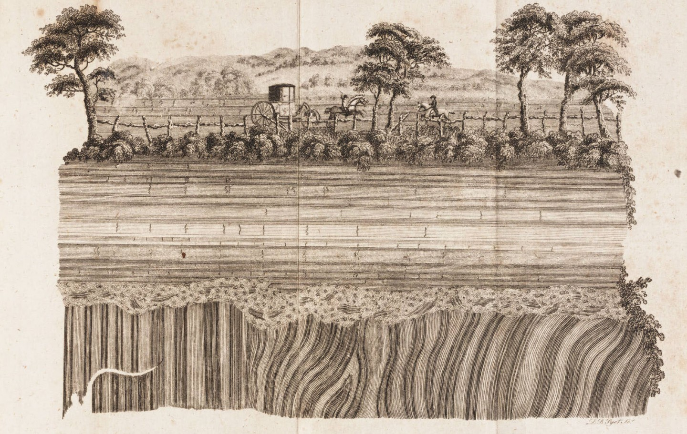

This paper is an exploration of the concept of an archive, the action of archiving and various differing perspectives on the preservation of information. Beginning by examining fundamental distinctions between different definitions of an archive, I go on to assess the intricacies of organising, storing information, and accessing it. Originating from personal experiences, such as organising files on a computer and an interest in understanding the instincts for saving, the research extends to several projects that concern different data. The exploration also contemplates the complexities of digital preservation, the significance of archives and the gaps within them, as well as their profound impact on shaping our perceptions of the past and future.
Introduction
"Let us not begin at the beginning, nor even at the archive. But rather at the word "archive"—and with the archive of so familiar a word.” This is the opening line of Jacques Derrida’s influential book “Archive Fever”. He continues: “All would be simple if there was just one or two main principles.”Derrida, Jacques. Archive Fever: A Freudian Impression. The University of Chicago Press, 1996, p. 1.
The archive faces different implications, associations, and definitions, including misinterpretations to that of a library or a collection. Hoping to find a single clear thread of thought in the contemporary use of the word, as well as its historical background, I had no other choice but to surrender to the complexity of it with “Archive Fever” confirming my observations: “It is thus our impression that we can no longer ask the question of the concept, of the history of the concept, and notably of the concept of the archive. […] Have we ever been assured of the homogeneity, of the consistency, of the univocal relationship of any concept to a term or to such a word as archive?”Derrida, Jacques. Archive Fever: A Freudian Impression. The University of Chicago Press, 1996, p. 33.
If seeking a tl;drshort for “too long; didn't read”
definition, according to the Urban Dictionary“Urban Dictionary: Archive.” Urban Dictionary, 2013, www.urbandictionary.com/define.php?term=archive.
it is as simple as the verb and the noun. “Save stuff and file it, or the place you put stuff to save it after you file it.”
German professor Aleida Assmann likes to differentiate between two forms of archives – functional ones and storage archives.Assmann, Aleida. “The Archive as a Laboratory of the New: Where Remembering and Forgetting Meet.” Productive Archiving: Artistic Strategies, Future Memories, and Fluid Identities, by Ernst van Alphen, Valiz, 2023.
Functional archives store necessary information for action to be taken in the present, and within them, expiry dates play a crucial role. Both administration and political power rely on these archives. When the presence of an organisation, bureaucracy or political power ends, the value of this information instantly decays.
Storage archives, on the other hand, operate on different principles. They come into existence when material that is no longer relevant for the present or future is set aside but not instantly discarded.Ibid.
Abbé Grégoire, regarded as the founder of the storage archive, in the late 18th century, introduced the term 'vandalism’.action involving deliberate destruction of or damage to public or private property.
He argued that “only barbarians and slaves hate the sciences and destroy the monuments of culture. Free men love and conserve them.”To understand his choice of language with its divisive characterisation that oversimplifies complex societal dynamics and perpetuates harmful stereotypes, it’s important to recognise that vandalism was then viewed as a violation of the newly acknowledged global principle of respecting cultural heritage. (Assmann, “The Future of Cultural Heritage and Its Challenges”)
This era marked the emergence of a new cultural concept detached from the political. And, along with it, new civic values that acquired sanctuaries in new types of museums, archives, and libraries.Assmann, Aleida. “The Archive as a Laboratory of the New: Where Remembering and Forgetting Meet.” Productive Archiving: Artistic Strategies, Future Memories, and Fluid Identities, by Ernst van Alphen, Valiz, 2023.
My first exposure to archives was when my family bought their first computer in 2005. I remember using DC++DC++ is a free and open-source peer-to-peer file-sharing application. Created in 2001, the program is still maintained, albeit in a slower speed and with no ambitious feature updates in the plans.
to browse the folders that people were sharing and download any music I could think of, as well as the struggle when downloading films took hours, if not days. In Latvia, back then, the latest popular media, such as films, were available (if even) way after their initial release in other countries.
Ever since, I have been practising collecting for future use. Whether it is music that I want to preserve access to and enjoy later, or references related to graphic design that may help my work practice, etc. Maintaining my archive, which consists of various collections, helps me retain information in a better way. It serves as a second brain, so to speak – a gut feeling that so often goes ‘Oh, I have this!’, because it is so easy to forget.
I wonder, then, often, what is it that instils in me the deep desire to collect, to gather, to store, to index, to rearrange, to make all of these things mine... What do these acts of collecting for the future mean? This thesis is an endeavour to understand the processes of storing and saving, the love of collecting, safekeeping and sharing, between the general and the individual act, by navigating through the wreckage of data, files, folders and fodder.
Chapter 1.Forever and Ever Before
Humanity’s longest-lasting remnants are found among the stars. There are thousands of satellites“How Many Satellites Are in Space?” NanoAvionics, 2024, nanoavionics.com/blog/how-many-satellites-are-in-space/. Accessed 21 Feb. 2024.
in geosynchronous orbits, forming rings of machines up to 36,000 kilometres from Earth. Geosynchronous spacecraft will quietly continue to orbit the Earth for ages, serving as lasting reminders of our civilisation until our planet’s end.Paglen, Trevor. “Some Sketches on Vertical Geographies.” e-flux, 2016, www.e-flux.com/architecture/superhumanity/68726/some-sketches-on-vertical-geographies/. Accessed 5 Feb. 2024.
Even further away than those are geostationary spacecraft that remain locked as man-made moons in perpetual orbit long after their operational lifetimes.
In the past, several interesting attempts have been made to create an archive that would encompass the essence of earthly life that would then be sent into the cosmos.
“The Last Pictures” disc that was attached to the outside of EchoStar XVI satellite. Credit: Trevor Paglen/Creative Time
One of the most recent examples is the art project “The Last Pictures” by Trevor Paglen which was commissioned by public art organisation Creative Time and launched into space in 2012, affixed to the exterior of the EchoStar XVI communications satellite.“Art in Space: ‘the Last Pictures’ by Trevor Paglen.” Space.com, 2012, www.space.com/18554-space-art-last-pictures-paglen-gallery.html. Accessed 3 Feb. 2024.
The artist collaborated with scientists to develop a micro-etched disc with 100 photographs, mostly archival, some his own, dating from the past century, and encased them in a gold-plated shell, designed to withstand the rigours of space and to orbit Earth for billions of years.Paglen, Trevor. “The Last Pictures.” Trevor Paglen, 2012, paglen.studio/lastpictures/. Accessed 3 Feb. 2024.
An ever-lasting frozen archive then would need to apprehend the real intricacies of our lives – hence the images chosen for “The Last Pictures” include captures of a typhoon, refugee experiences, a military drone camera view, melting glaciers and nuclear tests, alongside pictures of Captain America and personal computers. In result telling an impressionistic story of uncertainty, paradox, and anxiety about the future.“Trevor Paglen’s Last Pictures.” Phaidon, 2018, www.phaidon.com/agenda/art/articles/2018/june/12/trevor-paglen-s-last-pictures/. Accessed 20 Feb. 2024.
Dhdkw2ZPhjMd8JQrdUwite.jpg, 1389×514px, 344KB
Part of “The Last Pictures" montage. Left to right: Soyuz FG Rocket Launch, Kazakhstan; Typhoon, Japan; Greek and Armenian Orphan Refugees Experience the Sea for the First Time; Earthrise. Old Operating Theater, St. Thomas Church, London; Glimpses of America, American National Exhibition, Moscow World’s Fair; Cheyenne Mountain, Colorado Springs; Migrants Seen by Predator Drone, U.S.-Mexico Border. Credit: Trevor Paglen/Creative Time
A similar time capsule, or, indeed, an organised exhibition, was also previously sent into space with the 1977 Voyager 1 and Voyager 2 space probes by NASA. Compared to the previously mentioned project, it instead presented only an optimistic, best-foot-forward view of life on Earth for a potential extraterrestrial audience.Cotter, Holland. “Trevor Paglen: The Last Pictures.” The New York Times, 2013, www.nytimes.com/2013/03/01/arts/design/trevor-paglen-the-last-pictures.html. Accessed 3 Feb. 2024.
What was sent was the “Voyager Golden Record” – an LP record titled “The Sounds of Earth” – that consisted of some 115 images of Earth encoded in analogue format at the beginning of the record, after which are greetings in 55 languages, various field recordings of Earth and a 90-minute collection of world music.“The Sounds of Earth (1977, Gold-Plated Copper, Lathe Cut).” Discogs, www.discogs.com/release/1852452-Various-The-Sounds-Of-Earth. Accessed 15 Feb. 2024.
The cover contains instructions for extraterrestrial beings wishing to play the record.“Voyager Golden Record.” Wikipedia, en.wikipedia.org/wiki/Voyager_Golden_Record. Accessed 3 Feb. 2024.
Though we need to assume that if an ‘average alien’ found the record, they would take it to their top scientists to decipher, because the instructions are cryptic even to an ‘average human’.Verge Science. “We Decoded NASA’s Messages to Aliens by Hand.” YouTube, 2018, www.youtube.com/watch?v=RRuovINxpPc. Accessed 21 Feb. 2024.
The utmost prior attempt to deliver a self-descriptive message from humankind was with the “Pioneer plaques”. A pair of gold-coated aluminium plaques, affixed to the 1972 Pioneer 10 and 1973 Pioneer 11 NASA space probes, featured a pictorial message, of course, also in case of interception by intelligent extraterrestrial life. The plaques displayed the nude figures of a human male and female along with several symbols that are designed to provide information about the origin of the spacecraft.Sagan, Carl, et al. “A Message from Earth.” Science, vol. 175, no. 4024, Feb. 1972.
GPN-2000-001621-x.jpg, 960×591px, 78KB
The Pioneer plaques, affixed to the 1972 Pioneer 10 and 1973 Pioneer 11 spacecraft, depict a message for potential extraterrestrial encounters. They feature nude human figures and symbols indicating the spacecraft's origin. Credit: NASA
Both of the 20th century galactic archival endeavours can be criticised for their inability to create a truly holistic and inclusive catalogue. The Golden Record's contents looked, as Trevor Paglen puts it, like a kind of ‘it’s a small world’ multicultural utopia. “No images of war, poverty, inequality, environmental destruction.”“Trevor Paglen’s Last Pictures.” Phaidon, 2018, www.phaidon.com/agenda/art/articles/2018/june/12/trevor-paglen-s-last-pictures/. Accessed 20 Feb. 2024.
The final version of the Pioneer plaque diagram exhibited equivocal symbols as well as sexual and racial bias. Even with Trevor Paglen’s own disc as an addition to this constellation of archives about terrestrial existence, it does not feel complete.
Nevertheless, these projects do mark a significant step in the discourse and prompt crucial reflections on how we describe and present ourselves and our surroundings, where political, societal, and technological landscapes are in constant flux, shaping our creations, our choices and influences.
apollo8journeyhome (1).jpg, 4524×3405px, 2,2MB
Captured on 26 December 1968, during the journey home, this image exemplifies the irony that Apollo 8 actually rediscovered the Earth. Credit: NASA
billanders.jpg, 1000×1441px, 1,8MB
Astronaut Bill Anders during the Apollo 8 flight. This image is from a 16mm movie film the crew shot. They did not take any still pictures of each other during the mission. Credit: NASA
“Earthrise”, taken on December 24, 1968 by Apollo 8 astronaut William Anders. Credit: NASA
Earth as seen from Barnard’s Star (Sullivan et. al).png, 1922×1664px, 684KB
Earth (or rather its radio signals) as seen from Barnard’s Star, the fourth-nearest-known individual star to Earth. Credit: W. T. “Woody” Sullivan et. al
“We came to explore the Moon and what we discovered was the Earth,”Palmer, Annie. “How NASA’s Iconic ‘Earthrise’ Photo Was Shot 50 Years Ago.” Daily Mail, 2018, www.dailymail.co.uk/sciencetech/article-6521229/How-NASA-captured-famous-Earthrise-photo-Apollo-8-moon-mission-50-years-ago.html. Accessed 21 Jan. 2024.
claimed lunar module pilot William Anders of the Apollo 8 mission after having taken the iconic photographAt the time it was the most reproduced photograph; often published by NASA with Earth at the top, the original photograph had Earth on the left.
”Earthrise” on December 24, 1968.
If we place ourselves in the position of an observer of Earth, it turns out that our planet looks like a kind of cosmic lighthouse, emanating a distinct spectral signature of radio peaks and valleys over a twenty-four-hour period.Sullivan, Woodruff T., et al. “Eavesdropping: The Radio Signature of the Earth.” Science, vol. 199, no. 4327, Jan. 1978.
It turns out that it is military radars designed to detect ballistic missiles and track satellites in Earth’s orbit along with television transmitters by which we are making ourselves known to the vast reachesIn “Eavesdropping”, the astronomers pointed out that Earth’s galactic footprint now extends to neighbouring planets up to about sixty light years away (the distance that military radio waves have travelled since they started going online in the late 1950s).
of interstellar space.Sullivan, Woodruff T., and S. H. Knowles. “Lunar Reflections of Terrestrial Radio Leakage.” The Search for Extraterrestrial Life: Recent Developments, 1985.
In retrospect, it is worth contemplating the content we have launched into space. Maybe instead of just archiving, we should focus on creating better content. Our transmissive 'face of the earth' reveals the truth about us, going beyond what we intended.
By ‘better content’, I mean material that doesn't define our world solely by wars and television. For instance, consider the Disney Pixar film "WALL·E”.
“WALL·E” DVD Front Cover (2008, USA). Credit: Walt Disney Pictures
This cautionary tale portrays a desolate Earth, a consequence of humanity's environmental neglect.“WALL·E.” IMDb, 2008, www.imdb.com/title/tt0910970/. Accessed 2 Mar. 2024.
WALL·E’s world reminds us of the importance of taking responsibility for our planet.
We can actually think of the cassette tape, that WALL·E finds and views repeatedly, as an archive. This tape of the 1969 musical “Hello, Dolly!” serves as a reminder of a lost world and the vibrant life that once existed.Alter, Nick. “Wall-E: A Visual Exploration.” Southwestern University NetWorks Student Projects, people.southwestern.edu/~bednarb/su_netWorks/projects/alter/index.html. Accessed 2 Mar. 2024.
Perhaps the most significant message we send into space should not be a physical archive, but the ongoing story of how we learn from our mistakes and strive to create a sustainable future for ourselves and generations to come.
1*ZPpVeTykXcoJYtVrS1PZ7w.jpg, 1500×627px, 315KB
WALL·E observing what is left of Earth: piles of rubbish. Credit: Walt Disney Pictures
walle_1_27_18_full.jpg, 1626×1138px, 250KB
Cassette tape of the 1969 musical “Hello, Dolly!” as seen in “WALL·E” (2008). Credit: Walt Disney Pictures
Screenshot 2024-03-03 at 14.09.jpg, 1500×1124px, 348KB
The Voyager Golden Record Cover as seen in the background of the Wall·E DVD extra segment "Animation Sound Design: Building Worlds From The Sound Up". Credit: Walt Disney Pictures
Chapter 2.The Default Archive
The Earth itself becomes an archivist in Manuel DeLanda's non-linear history.From DeLanda's perspective, a non-linear conception of history involves more than just stylistic presentation; it requires applying principles from physics, such as complex systems theory, to understand the dynamic and unpredictable nature of historical processes.
It preserves traces of its past in the form of layers of sediment, fossils, and other geological formations. Also ecologically, the soil can serve as a memory of human extraction. These physical records provide valuable insights into the planet's long history, offering a glimpse into the forces that have shaped our planet's evolutionDeLanda, Manuel. A Thousand Years of Nonlinear History. Swerve Editions, 2000.
and the traces we as humans have left in the past.
Given its position at the core of our planet and its role as a repository of geological and environmental history, we can consider Earth fundamentally as an archive. Could we then label it as the default archive? And therefore think that the default behaviour of the Earth is to save, collect, and archive?
From the moment we arrived on Earth, the innate act of preservation continued, with our primal urge mirroring the Earth's role as another, even larger container and collector of things. People were not merely hunting, but collecting in order to survive.
American author Ursula K. Le Guin argues that the earliest human tool was not the spear, but a receptacle.a container, device, etc., that receives or holds something. https://www.dictionary.com/browse/receptacle
That we stayed alive and fat by gathering and netting, before sloping off to hunt mammoths.K. Le Guin, Ursula. Carrier Bag Theory of Fiction. 1986.
“If it is a human thing to do to put something you want, because it's useful, edible, or beautiful, into a bag, or a basket, or a bit of rolled bark or leaf, or a net woven of your own hair, or what have you, and then take it home with you, home being another, larger kind of pouch or bag, a container for people, and then later on you take it out and eat it or share it or store it up for winter in a solider container or put it in the medicine bundle or the shrine or the museum, the holy place, the area that contains what is sacred, and then next day you probably do much the same again – if to do that is human, if that's what it takes, then I am a human being after all.”Ibid.
5184.jpg, 3800×2280px, 311KB
The earliest known drawing in history – a red, cross-hatched pattern. Found in a cave in South Africa. Credit: Craig Foster
The story of data is an ancient one. Approximately 73,000 years ago in what is now South Africa, an early human picked up a piece of ocher and inscribed a symbol onto a shard of stone, marking the earliest recorded specimen of human artwork.Sample, Ian. “Earliest Known Drawing Found on Rock in South African Cave.” The Guardian, 2018, www.theguardian.com/science/2018/sep/12/earliest-known-drawing-found-on-rock-in-south-african-cave. Accessed 20 Feb. 2024.
To continue this story, Sebastian Moss, a data centre journalist, elaborates: “Most of what happened in the world was not recorded. Of what was, the majority has been lost in wars, fires, and through institutional decay, never to be recovered. Our understanding of ourselves and our past is told through what little survived, providing a murky glimpse that is deeply flawed and relies on the skewed records of kings and emperors.”Moss, Sebastian. “The Last Data Center.” Data Center Dynamics, 2022, www.datacenterdynamics.com/en/analysis/the-last-data-center/. Accessed 29 Jan. 2024.
Moreover, Earth, acting as an archive, exhibits another intriguing behaviour known as the formation of unconformities.An unconformity represents time during which no sediments were preserved in a region or were subsequently eroded before the next deposition. The physical record for that time interval is missing and geologists must use other clues to discover that part of the geologic history of that area.
A very clear example of this occurrence is revealed in Hutton’s Unconformity,Wilkinson, Mark. “Hutton’s Unconformity and the Birth of ‘Deep Time.’” Deposits Mag, 2017, depositsmag.com/2017/11/07/huttons-unconformity-and-the-birth-of-deep-time/. Accessed 17 Dec. 2023.
where a gap is visible in the Earth’s strata. These unconformities are similar to the missing data—or gaps—in archives, due to both intentional and unintentional factors.
Hutton.jpeg, 1440×911px, 487KB

Unconformity at Jedburgh, engraving from James Hutton, “Theory of the Earth” (1795). Credit: Linda Hall Library.
These gaps raise critical questions: whose voices are preserved in the records of the past? And whose stories are lost or obscured? Who controls the data and how does it influence our understanding of history and our identity? This connects to the concept of hauntology,The term was first coined in the early 1990s by the French philosopher, Jacques Derrida, in his discussion of the enduring legacy of Marxism. Since then, however, hauntology has evolved and entered the cultural mainstream, becoming a shorthand for the ways in which the past returns to haunt the present.
by which we can understand the persistent influence of the past on our present. Hauntology invites us to recognise the spectres of history that linger in the gaps and distortions of our records, reminding us of the selective nature of recorded narratives and the voices that have been silenced or obscured.Coverley, Merlin. Hauntology: Ghosts of Futures Past. Oldcastle Books, 2021.
By acknowledging the ghosts or gaps in our collective memory, we can underscore another primal instinct – to prepare for the future. Initiatives like the Global Seed Vault, situated above the Arctic Circle between Norway and the North Pole, aim to safeguard agricultural biodiversity from disasters – to fill these future gaps in our 'default archive’.
The Vault, located on the Norwegian island of Spitsbergen in the remote Arctic Svalbard archipelago, officially opened in 2008.Mellgren, Doug. “‘Doomsday’ Seed Vault Opens in Arctic.” NBC News, 2008, www.nbcnews.com/id/wbna23352014. Accessed 21 Jan. 2024.
Its primary purpose is to provide long-term storage of duplicates of seeds conserved in genebanks from around the world, essentially serving as a crucial safeguard for humanity's agricultural heritage.Duggan, Jennifer. “Inside the “Doomsday” Vault.” TIME, 2022, time.com/doomsday-vault/. Accessed 21 Jan. 2024.
The Svalbard Global Seed Vault entrance. Credit: Crop Trust
Chapter 3.Digital Selection
The Svalbard Global Seed Vault’s only neighbour is a similar repository: the Arctic World Archive, which aims to preserve data for the world’s governments and private institutions.Duggan, Jennifer. “Inside the “Doomsday” Vault.” TIME, 2022, time.com/doomsday-vault/. Accessed 21 Jan. 2024.
The Spitsbergen island, where both of the aforementioned archives are located, was discovered by the Dutch navigator Willem Barentsz in 1596. Mapped for the first time in the 1599 map of Arctic exploration, it appears as Het Nieuwe LandDuring the 16th and 17th centuries, European powers, including the Dutch, actively explored and claimed new territories around the world. W. Barentsz's Arctic exploration was part of this broader effort for trade routes and resources. The naming of Spitsbergen as "The New Land" reflects a colonial mindset, with explorers often disregarding indigenous names. While not extensively colonised, Spitsbergen's exploration laid the groundwork for later colonial endeavours, driven by economic interests and the pursuit of new trade routes and resources. This historical context contributes to the broader narrative of European colonialism and its impact on the world during that time.
(Dutch for “The New Land”).“Svalbard.” Wikipedia, en.wikipedia.org/wiki/Svalbard#Dutch_discovery,_exploration,_and_mapping_of_a_terra_nullius. Accessed 3 Feb. 2024.
1598 map of the entire arctic from Willem Barentsz's third voyage. Credit: Barry Lawrence Ruderman Antique Maps Inc.
This historical naming, though reflective of the colonial era's expansionist mindset, now finds renewed relevance in the modern age. The cooler climates of these regionsWith no need for energy-intensive cooling systems in data centres and other facilities, these areas also offer an abundance of renewable energy sources, as well as reliable infrastructure and supportive government policies.
have become particularly appealing for technology companies, meaning, new data centres are being set up there.Bradbury, Danny. “Super Cool: Arctic Data Centres Aren’t Just for Facebook.” The Register, 2016, www.theregister.com/2016/05/12/power_in_a_cold_climate/. Accessed 22 Feb. 2024.
The_Night_Watch_-_HD.jpg, 2502×2088px, 3,1MB
“Rembrandt van Rijn "The Night Watch", 1642. Credit: Amsterdam Museum
“Interior of the Arctic World Archive. Credit: Arctic World Archive
BitTorrent_network.png, 1920×1920px, 504KB
When sharing a file within the torrent protocol, the middle computer is acting as a "seed" to provide a file to the other computers which act as peers. Credit: Scott Martin
Amongst other data, the Arctic World Archive includes the painting commonly referred to as "The Night Watch" (Dutch: De Nachtwacht) by Rembrandt, 1642. Prominently displayed in the Rijksmuseum as the best-known painting in Amsterdam Museum's collection, the museum deposited The Night Watch to make sure that the digitised version of the painting is well preserved and can be made available for the benefit of future generations.“The Night Watch Made Immortal.” Arctic World Archive, 2019, arcticworldarchive.org/collection/the-night-watch-made-immortal/. Accessed 21 Jan. 2024.
In the Arctic World Archive also sits the backup of GitHub, a platform used for version control of open-sourceSoftware that has its source code available to the public.
software projects.GitHub’s deposit into the Arctic World Archive ensures that, in the case of a global disaster, people wouldn’t be forced to begin anew. They could instead pull from this massive repository of the inner workings of contemporary society.
On 02/02/2020, snapshots of all of its active public code repositories had been taken, to then be preserved in the Arctic Code Vault.“Arctic Vault.” GitHub Archive Program, 2020, archiveprogram.github.com/arctic-vault/. Accessed 10 Jan. 2024.
Although who can afford to submit content to the Arctic World Archive? Interestingly enough, anyone can submit data for storage in the archive, starting from €99 for backing up 1 gigabyte of data for 25 years on a shared piqlFilm roll.“The Future of Data Preservation.” Arctic World Archive, 2019, arcticworldarchive.org. Accessed 21 Jan. 2024.
The Arctic World Archive and its GitHub backup aren't just generating marketing buzz; their online presence and self-promotion feel too commercial and lacking in humility. There are advertisements of backed-up data from large institutions and even an option to have a ceremony for the memories and information you contribute to the ‘World Memory’,Ibid.
which some might see as overly commercial.
This raises questions about accessibility: who truly has access to store their data in this archive? And should our limited backup space prioritise preserving NFTs,“Digital Art and NFTs Deposited for Eternity in the Arctic World Archive.” Piql, 2022, piql.com/de/nachrichten/digital-art-and-nfts-deposited-for-eternity-in-the-arctic-world-archive/. Accessed 22 Feb. 2024.
among other things?
On a personal note, my graduation thesis website is hosted on GitHub. With the backup not being up-to-date and with no assurance of updates planned for the near future, I worry about its preservation. Is my work a gap in GitHub’s backup?
While the Arctic World Archive caters to those with financial means, the conversation around data preservation takes a different turn when we consider the internet and torrents.
Torrents are files, that are constantly moving across a large network using the peer-to-peer communication protocol.“BitTorrent.” Wikipedia, en.wikipedia.org/wiki/BitTorrent. Accessed 22 Feb. 2024.
In order to download a file, the downloading file segments must at the same time be uploaded to other users requesting the file.
Torrents enable people to freely share digital files, making a wide range of content accessible to everyone. By bypassing traditional restrictions, like centralised servers, distribution control, paywalls, and geo-blocking, torrents create a more inclusive online environment where users can easily find and share data.It is worth mentioning, that torrents work on a slightly different principle than other P2P platforms, i.e., being more generalised and top down, they use tracker lists of available media.
This sharing system ensures that content remains available to all, regardless of geographical, financial, and otherOften, torrent trackers stand out as the sole online destinations where you can discover content that's both rare to access publicly and has been lost to internet decay.
limitations. In a way, torrents are filling in the gap of the internet, granting access to otherwise inaccessible information.
Of course, there is also the well-known illegal aspect of torrents. As Walter Benjamin once remarked “You have all heard of people whom the loss of their books has turned [them] into invalids, or of those who in order to acquire them became criminals.”Benjamin, Walter. “Unpacking My Library: A Talk about Collecting.” Illuminations, edited by Hannah Arendt, Schocken Books, 2007.
This observation highlights well the lengths to which individuals may go to obtain content, emphasising its importance and the sense of necessity they feel. While there are legal and ethical considerations, access to information remains a driving force for many users.
To not idealise torrents, it is important to mention, that they are still a very much curated archive and curating is never a neutral act. Even with decentralised systems, such as torrents, you are always dependent on specific files being available, as someone has to be sharing them at a given time.
Screenshot 2024-02-22 at 19.35.31.png, 2941×1585px, 332KB
A view of SoulseekQt, a peer-to-peer network file-sharing application. Source: Dans Jirgensons
Let's introduce another aspect of digital preservation and sharing by discussing the program Soulseek. This old-school file-sharing application, which has experienced a notable rise in popularity in recent years,“Soulseek Is Still Alive.” Hacker News, 2014, news.ycombinator.com/item?id=7398441. Accessed 22 Feb. 2024.
is tailored for music enthusiasts and operates on a peer-to-peer network.“Soulseek.” Golden, golden.com/wiki/Soulseek-3MVAK. Accessed 13 Jan. 2024.
Unlike torrents, Soulseek allows users to exchange music files only directly from one user to another. This organically direct exchange platform is gaining popularity for its simplicity in accessing individual collections of files. Whether you're seeking mainstream hits or niche tracks, SoulSeek provides a platform where users can easily download files without relying on their popularity or availability on mainstream channels.
While torrents facilitate widespread access to diverse content, Soulseek offers intimate exchanges of files. Both of these systems highlight the strength of a networked approach in maintaining access to information and cultural, as well as digital heritage.
Conclusion
What is the point of archives if there are gaps in all of them? If the narratives that are constructed in them seem so arbitrary?
There are attempts of adding up to the galactic archive, and the attempts to create complete archives here on Earth, but no matter how much data you add to something, it will always remain incomplete. Imagine: even if you looked at The Earth from a spaceship, you could never see both sides of the planet at the same time.
Could an archive ever be complete, as time keeps passing and everything keeps turning into history?
Humans always try to make things a complete whole, but with all the things that we explore, there will always be something missing. When we attempt to achieve completeness, it only emphasises or even creates the problem of absence. It’s only total when everything disappears. Instead, could the Black Hole be the total archive?
The point of an archive is to preserve valuable information and cultural heritage to the best of its ability using an index system. Striving to mitigate gaps by collecting and safeguarding as much content as possible, an archive is never complete and there is always work to be done, taking into account issues such as accessibility, limitations in resources, or the nature of digital preservation. Despite the existence of said gaps, archives still serve a crucial role in maintaining a record of our history, knowledge, and collective memory for future generations.
Maybe the archive can only breathe if one acknowledges its flaws, the systemic failure that is inscribed within it, or maybe one day the archive will outdate itself and will become redundant.
Bibliography
Alter, Nick. “Wall-E: A Visual Exploration.” Southwestern University NetWorks Student Projects, people.southwestern.edu/~bednarb/su_netWorks/projects/alter/index.html. Accessed 2 Mar. 2024.
Angélil, Marc, and Cary Siress. Terrestrial Tales: 100+ Takes on Earth. Ruby Press, 2019.
“Art in Space: ‘the Last Pictures’ by Trevor Paglen.” Space.com, 2012, www.space.com/18554-space-art-last-pictures-paglen-gallery.html. Accessed 3 Feb. 2024.
Assmann, Aleida. “The Archive as a Laboratory of the New: Where Remembering and Forgetting Meet.” Productive Archiving: Artistic Strategies, Future Memories, and Fluid Identities, Valiz, 2023.
Benjamin, Walter. “Unpacking My Library: A Talk about Collecting.” Illuminations, edited by Hannah Arendt, Schocken Books, 2007.
Bradbury, Danny. “Super Cool: Arctic Data Centres Aren’t Just for Facebook.” The Register, 2016, www.theregister.com/2016/05/12/power_in_a_cold_climate/. Accessed 22 Feb. 2024.
Cotter, Holland. “Trevor Paglen: The Last Pictures.” The New York Times, 2013, www.nytimes.com/2013/03/01/arts/design/trevor-paglen-the-last-pictures.html. Accessed 3 Feb. 2024.
Coverley, Merlin. Hauntology: Ghosts of Futures Past. Oldcastle Books, 2021.
DeLanda, Manuel. A Thousand Years of Nonlinear History. Swerve Editions, 2000.
Derrida, Jacques. Archive Fever: A Freudian Impression. The University of Chicago Press, 1996.
“Digital Art and NFTs Deposited for Eternity in the Arctic World Archive.” Piql, 2022, piql.com/de/nachrichten/digital-art-and-nfts-deposited-for-eternity-in-the-arctic-world-archive/. Accessed 22 Feb. 2024.
Duggan, Jennifer. “Inside the ‘Doomsday’ Vault.” TIME, 2022, time.com/doomsday-vault/. Accessed 21 Jan. 2024.
“How Many Satellites Are in Space?” NanoAvionics, 2024, nanoavionics.com/blog/how-many-satellites-are-in-space/. Accessed 21 Feb. 2024.
K. Le Guin, Ursula. Carrier Bag Theory of Fiction. 1986.
Moss, Sebastian. “The Last Data Center.” Data Center Dynamics, 2022, www.datacenterdynamics.com/en/analysis/the-last-data-center/. Accessed 29 Jan. 2024.
Paglen, Trevor. “The Last Pictures.” Trevor Paglen, 2012, paglen.studio/lastpictures/. Accessed 3 Feb. 2024.
Palmer, Annie. “How NASA’s Iconic ‘Earthrise’ Photo Was Shot 50 Years Ago.” Daily Mail, 2018, www.dailymail.co.uk/sciencetech/article-6521229/How-NASA-captured-famous-Earthrise-photo-Apollo-8-moon-mission-50-years-ago.html. Accessed 21 Jan. 2024.
Sagan, Carl, et al. “A Message from Earth.” Science, vol. 175, no. 4024, Feb. 1972.
Sample, Ian. “Earliest Known Drawing Found on Rock in South African Cave.” The Guardian, 2018, www.theguardian.com/science/2018/sep/12/earliest-known-drawing-found-on-rock-in-south-african-cave. Accessed 20 Feb. 2024.
“Soulseek Is Still Alive.” Hacker News, 2014, news.ycombinator.com/item?id=7398441. Accessed 22 Feb. 2024.
Sullivan, Woodruff T., et al. “Eavesdropping: The Radio Signature of the Earth.” Science, vol. 199, no. 4327, Jan. 1978.
Sullivan, Woodruff T., and S. H. Knowles. “Lunar Reflections of Terrestrial Radio Leakage.” The Search for Extraterrestrial Life: Recent Developments, 1985.
Verge Science. “We Decoded NASA’s Messages to Aliens by Hand.” YouTube, 2018, www.youtube.com/watch?v=RRuovINxpPc. Accessed 21 Feb. 2024.
“Voyager Golden Record.” Wikipedia, en.wikipedia.org/wiki/Voyager_Golden_Record. Accessed 3 Feb. 2024.
“WALL·E.” IMDb, 2008, www.imdb.com/title/tt0910970/. Accessed 2 Mar. 2024.
Wilkinson, Mark. “Hutton’s Unconformity and the Birth of ‘Deep Time.’” Deposits Mag, 2017, depositsmag.com/2017/11/07/huttons-unconformity-and-the-birth-of-deep-time/. Accessed 17 Dec. 2023.
Thank you:
Prof. Dr. Füsun Türetken, Bart de Baets, François Girard-Meunier, Thomas Buxo, Sonya Umanskaya, Trang Le, Inge Maria Maier, Cecilie Fang, Kacper Werkowicz, Ivo Blackwood

.jpg)
.png)